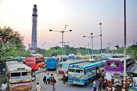
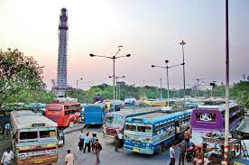

Location of Kolkata:
Located in Eastern India
Commute Options:
Kolkata is connected through Airplanes, Trains and Buses from all over India and Around the World
 

Kolkata International Airport Howrah Station Esplanade Bus Station
Local Commute Options:
Kolkata can be explored using various commute options Like Bus, Minibus, Car, Taxi, Subway-Metro, Tram, Auto, Ricksaw, Ferry Service and Boat
Typical Kolkata Road and Traffic Kolkata Subway-Metro Manpowered Ricksaw
Tram Ferry Service Boats on River Ganges
Climate of Kolkata:
Kolkata has a tropical wet and dry climate with maximum temperature rises during the summer months of May-July in the range of 24º - 42º C. Climate is humid varying from 85% - 65% during the summer. Kolkata has an average rainfall of 158 cm between June to September. The minimum temperature falls during the winter months of December - January is around 8º - 26ºC and it is pleasant in the winter.
Local Languages:
Bengali is the local language however Kolkata has a cosmopolitan population with Hindi, English and other language people in it.
Brief History:
Three villages namely Kalikata, Gobindpur and Sutanati together constitute the city of Kolkata located on the eastern bank of the Hooghly River. During the 13th century, trade with foreign land flourished in the region. In 1686, Job Charnock, the founder of Kolkata, started the East India Company factory at Sutanati as part of the expansion plan in British India. Kolkata is believed to have its name from the village Kalikata. However, there are other views. The most populous belief is that the city is named after the Hindu Goddess, “Kali”. In 1972, Warren Hasting, the First Governor General of British India announced Kolkata as the capital of British India and renamed it Calcutta. Calcutta remained the capital of British India until 1911. In 2001, Calcutta was again renamed back to its original name Kolkata.
Old Howrah Bridge Old Victorial Memorial Old Writer's Building Old Durga Puja